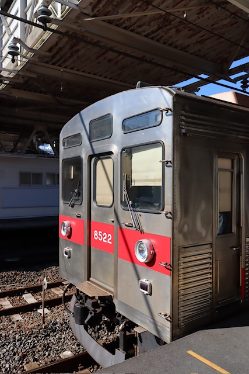

東急8500系
@sirokuma_8110F
東急では、1969年（昭和44年）から
当時建設していた地下鉄
「新玉川線」
（現・田園都市線渋谷駅 - 二子玉川駅間）
向け車両として地下線火災対策基準
「A - A基準」を満たした8000系を
東横線に順次導入した。
その後、渋谷駅から都心方面に
直通運転を行う予定の
地下鉄半蔵門線への
乗り入れにあたって、
東急・帝都高速度交通営団（現・東京地下鉄）
共通の車両規格が作成された。
この規格に合致させるため、
路線識別用の赤帯の貼付、
機器取り扱いの変更、
および電動車比率の向上による
先頭車の電動車化などの
マイナーチェンジを図った本形式を
新玉川線・半蔵門線向けとして
1975年から導入することになった。
本系列は8000系の
マイナーチェンジ車両であるため、
登場時は8000系の一部として
扱われていたが、
その後増備が進むにつれて
8500系と呼ばれるようになった。
現在でも広義の8000系と
呼ばれるグループに含まれる。
1991年までに400両が導入され、
東急の系列として最大の
両数を占めていた。